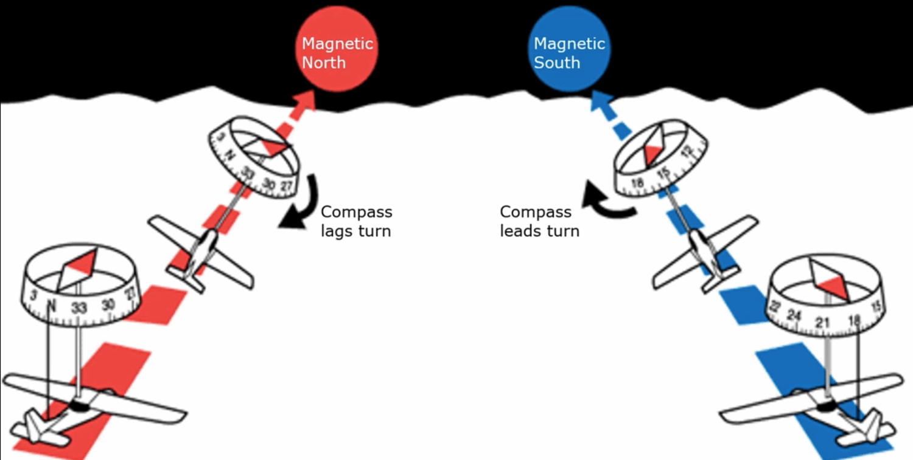
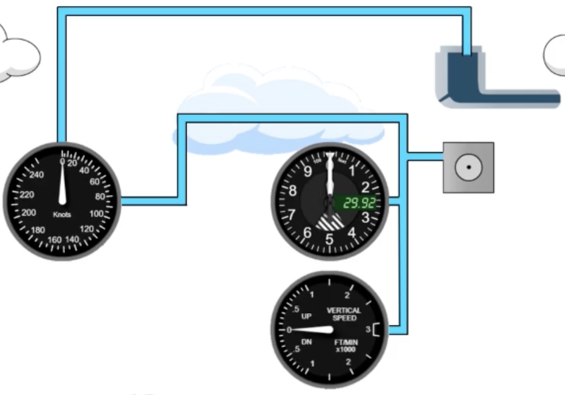

Airplane Systems & Instruments
The engine and propeller, the quirks of the magnetic compass, the pitot-static instruments, and the different kinds of altitude.
Propeller & engine
- Constant-speed propeller = a prop whose blade angle (pitch) can be adjusted to hold a chosen RPM, keeping the engine efficient across speeds. (A fixed-pitch prop cannot.)
- Carb heat enriches the mixture. Warm air is less dense, so the fuel-to-air ratio goes up (richer). You use carb heat to prevent or melt carburetor ice; expect a small RPM/power drop when it's on.
Detonation
The fuel/air mixture explodes instead of burning smoothly — from fuel grade too low, an over-lean mixture, or excessive engine temps. Fix: richen mixture, reduce power, open cowl flaps, lower the nose to cool.
Pre-ignition
The mixture ignites too early — before the spark plug fires — usually from a glowing hot spot (carbon/deposit) in the cylinder.
Carburetor icing is most likely in high humidity with outside temps roughly 20–70 °F (−7 to +21 °C) — and can occur even on warm days. First sign with a fixed-pitch prop: a gradual RPM drop.
Magnetic compass errors
The compass only reads correctly in straight, level, unaccelerated flight. Two mnemonics cover the dynamic errors (Northern Hemisphere):
Acceleration error, on E/W headings:
Accelerate → North
Decelerate → South
Turning error, rolling out onto N/S:
Undershoot → North (lead)
Overshoot → South (lag)
A small weight offsets magnetic dip, leaving the card's N (south-seeking) end slightly heavy. In a bank the card tilts and Earth's vertical magnetic pull swings it — turning error; speeding up or slowing down throws the weighted end by inertia — acceleration error.
UNOS only covers how to roll out (end) a turn onto N/S — not the start. For the start of the turn, use the two-hands technique: stack two hands, and when you bank one way the card's south end swings the other.

Variation = the angle between true north and magnetic north (depends on location).
Deviation = compass error from metal and electrics in the airplane itself.
Pitot-static system
Three instruments run off air pressure. The pitot tube senses ram (dynamic) pressure; the static port senses ambient (still) pressure.

Blockages & altitude effects
- Static port blocked: no effect at first — but the moment you change altitude the altimeter freezes at the last reading and the VSI sticks at 0 (airspeed also reads off). Use the alternate static source.
- Pitot tube blocked: affects only the airspeed indicator.
- At higher altitude the airspeed indicator reads slower than your true airspeed — fewer air molecules ram into the tube. (Indicated airspeed < true airspeed up high.)
Break the glass on the VSI — cabin air then becomes the static source, restoring the altimeter and airspeed indicator. The VSI is sacrificed, and the altimeter reads slightly high (cabin pressure is a touch lower than outside).
Types of altitude
| Altitude | What it means |
|---|---|
| Indicated | What the altimeter shows with the current setting in the Kollsman window. |
| True | Actual height above mean sea level (MSL). |
| Absolute | Height above ground level (AGL). |
| Pressure | Altitude shown when the altimeter is set to 29.92 "Hg (the standard datum). |
| Density | Pressure altitude corrected for non-standard temperature — the altitude the airplane "feels." See Performance. |
1 inch of Hg ≈ 1,000 ft of altitude. Mnemonic for the basics: True = MSL, Absolute = AGL.
On a colder-than-standard day your true altitude is lower than the altimeter shows — "from hot to cold, look out below."